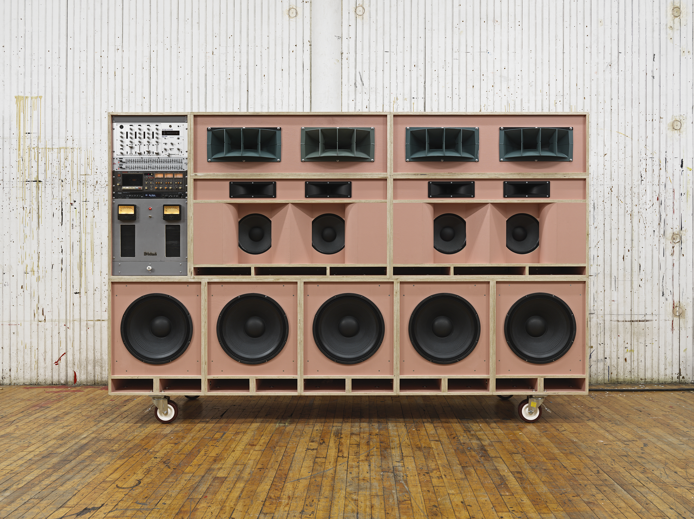
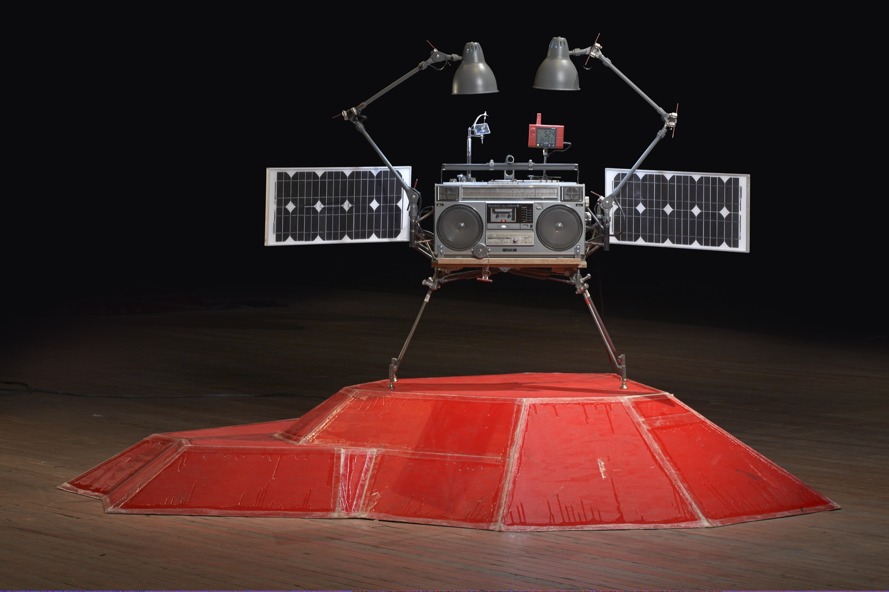

TOM SACHS
BOOMBOX RETROSPECTIVE
1999 - 2000

Sound systems have always been a part of Sachs' experience; borne from the artist’s love of music, and the universality it broadcasts across cultures. Varying in shape, size, and functionality –from Big Pink (2022), a pristine high-end consumer array stacked in monolithic homage to Jamaican sound systems, to interplanetary travel on other worlds with Phonkey (2011)– the boomboxes in this exhibition have been all used in support of an activity, event, or ritual that is precious to Sachs. “From dance party, to road trip, to poche vide (a place to empty your pockets as you enter your home), to laboratory, to bachelor pad to iPhone dock, sound systems have always been a part of my work and will be as long as I continue to love music.” They are each a steady progression, though the philosophy remains unchanged.

Tom Sachs’ highly personalized use of materials and processes is rooted in bricolage, the construction of art from a range of available, everyday objects, and Boombox Retrospective: 1999-2022 demonstrates the artist’s unique DIY aesthetic, centered on ritual and symbols of power structures within industry and consumer culture. Using a specialized technique and working inventively with a wide range of materials from plywood, foam core, batteries, and duct tape, to rudimentary wires, hot glue, plastic, and solder, the artist and his studio team fabricate and modify new and old, to create obsessed over architectural constructions, which support elaborate home-made pseudo-science, and quasi-religious rituals.

The exhibition features thirteen sound systems that highlight the artist’s ability to distinctly transform ordinary, everyday materials into intricate works of art. With wit and ingenuity, Sachs creates boomboxes that play music and activate the space, turning it into an immersive soundscape. Transparency is key in the artist’s practice; the boomboxes on display combine perfected handmade sculptures and found objects with the materials most sacred to the artist’s studio, but never omit pencil traces or revisions left on their face.